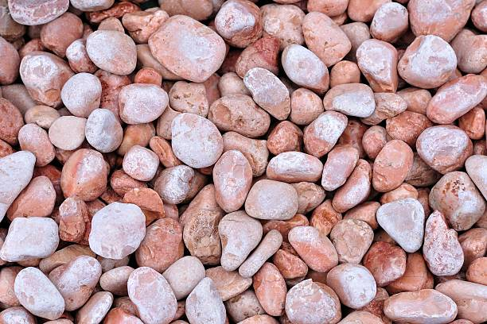
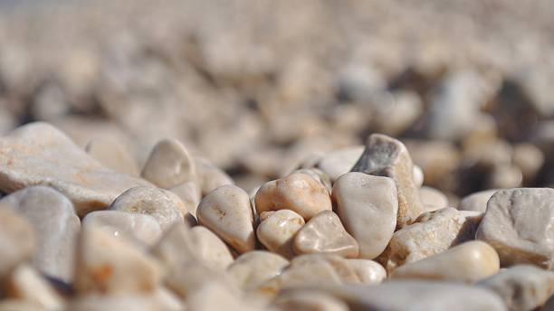
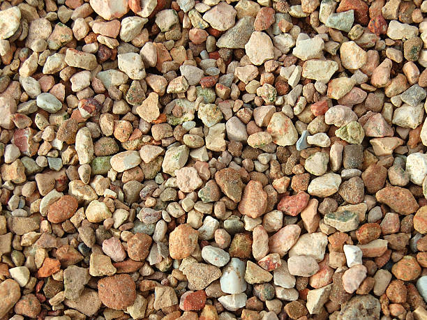
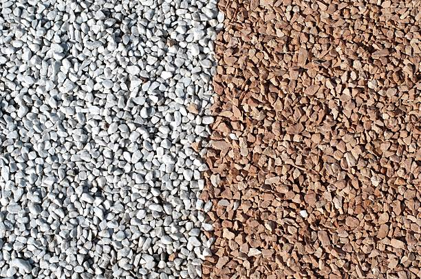

USA - Nationwide
info@lindahardware.pro
USA - Nationwide
info@lindahardware.pro

Discover reliable solar panel installation services near you . Our expert team helps you harness solar energy efficiently and affordably.
Transform your driveway with durable, aesthetically pleasing pea gravel. Experience the optimal combination of longevity and style, making your property stand out in Usa - Nationwide.
Residential & commercial Pea Gravel
Quality services at affordable prices
Immediate 24/ 7 emergency services


Landscaping can set the tone of any property, and pea gravel is a fantastic choice for various landscape designs. With its natural appearance and range of colors, pea gravel can be used creatively to bring your landscaping visions to life. Whether you are looking for a serene zen garden or a vibrant flower bed, our pea gravel landscaping ideas will inspire you.
Our team at Pea Gravel specializes in translating your ideas into reality . From creating pathways that guide guests through your garden to defining areas with lovely borders, pea gravel can serve multiple purposes. We understand local landscaping trends, which means we can recommend styles that blend seamlessly with existing vegetation and conditions in Usa - Nationwide.
Not only is pea gravel visually appealing, but its practical benefits are abundant. It provides excellent drainage, allowing water to permeate the soil beneath, which helps prevent water pooling and flooding in your garden. This is especially important in the often unpredictable climate of Usa - Nationwide. With our expertise, we ensure that your landscaping ideas come to life with the elegance and durability that only pea gravel can provide.

Creating charming walkways and pathways is essential for enhancing the accessibility and visual appeal of your property. Pea gravel is an ideal material for this purpose, offering not only beauty but durability as well. The soft texture of the gravel yields a pleasant walking experience, while the various colors available allow for countless design outcomes.
Our services include designing and installing pea gravel walkways that complement your existing landscape. Whether you're looking to create a winding garden path, a straight approach to your front door, or simply need pathways connecting different areas of your yard, our team will work with you to create functional and beautiful solutions.
Choosing us means selecting a partner who understands the importance of detail and functionality in your outdoor space. We pride ourselves on using the highest quality pea gravel and providing unparalleled customer service from initial consultation through project completion.

Pea gravel is not just beautiful; it also provides numerous practical benefits when used in garden beds. As a mulch alternative, pea gravel aids in moisture retention, weed control, and offers a great way to visually tie different elements of your yard together. our offerings include high-quality pea gravel selected specifically for gardening purposes.
The various sizes and colors of pea gravel add a layer of elegance to your garden beds while ensuring proper drainage. This is crucial for preventing plant roots from sitting in water, which can lead to rot. Moreover, pea gravel helps regulate soil temperature, creating a more hospitable environment for your plants.
When you work with us, you gain access to our expertise in garden design and soil management. We strive to ensure that your garden beds flourish while staying visually striking. Our commitment to quality materials and skilled installation guarantees a long-lasting and beautiful garden for your property.

Patios are often the heart of outdoor entertainment spaces, and pea gravel can turn an ordinary patio into a stunning focal point. Offering a comfortable, non-slip surface, pea gravel patios are ideal for hosting family gatherings or quiet evenings under the stars. The small stones provide a soft, appealing texture underfoot without sacrificing durability.
At [your company name], we specialize in creating custom patio solutions that suit the needs and style of each homeowner . Our experience means we can guide you through the selection of materials, colors, and sizes of pea gravel that will not only enhance your patio's design but also provide lasting quality.
Our team of experts ensures that the installation is handled with precision and care, focusing on creating proper drainage to prevent pooling water and erosion. Why choose us? Our commitment to excellence and customer satisfaction ensures your patio will not only meet but exceed your expectations, making it the perfect addition to your home.

Safety is paramount when it comes to designing playground areas, and pea gravel is an ideal solution. It provides a soft surface that can cushion falls, reducing the risk of injury. Our premium-grade pea gravel is certified safe for use in playgrounds, making it a reliable choice for homeowners, schools, and parks .
The natural drainage and permeability of pea gravel help keep playgrounds dry, reducing mud and accumulations of water that can contribute to unsafe conditions. It also offers a non-slip surface that encourages active play.
When you choose us for your playground surface needs, you’re selecting a company with expertise in safety and quality. We understand the needs of families and communities and strive to provide an installation that meets or exceeds safety standards while creating a fun and engaging environment for children.

When it comes to creating a designated pet area or dog run, functionality and comfort are key. Pea gravel is the perfect solution, offering a soft surface that is gentle on paws while being easy to clean and maintain. At Pea Gravel, we understand the needs of pet owners and specialize in creating dog runs that prioritize both safety and aesthetics.
A pea gravel surface provides excellent drainage, keeping your pet area dry and minimizing mud during rainy weather. Its natural properties also discourage weed growth and allow for easy clean-up of waste, making maintenance a breeze. The rounded stones are comfortable for pets to walk on, providing them with a safe space to exercise and play.
Moreover, pea gravel is a cost-effective solution, ensuring that your dog run can be set up quickly without compromising quality. Our experienced team at Pea Gravel works closely with you to design a pet area that meets your specific needs, from size to layout and aesthetics. We’ll ensure your dog run harmonizes beautifully with your landscape while providing a practical space for your furry friends to explore.
Your pets deserve the best, and with our pea gravel solutions, they’ll have a safe and inviting area in Usa - Nationwide to call their own.

Flower beds can greatly benefit from the addition of pea gravel as a ground cover. Not only does it look visually appealing, but it also helps with moisture retention and weed prevention. Using pea gravel in flower beds enhances drainage around your plants, allowing their roots to breathe and flourish in healthy soil.
In Usa - Nationwide, we understand the challenges of gardening in our climate, and our pea gravel is chosen for its perfect compatibility with a variety of flowering plants. Our skilled personnel can guide you in selecting the right colors and sizes to integrate seamlessly with your garden's colors and designs.
Additionally, placing pea gravel around your flowers makes garden maintenance easier by allowing for a clean and organized look. Our team is committed to providing you with an exceptional service experience, delivering beautiful and functional flower beds that enhance your home’s landscaping.

Rock gardens are becoming increasingly popular due to their unique aesthetic and eco-friendly qualities. Pea gravel fits seamlessly within a rock garden, lending itself to a natural, earthy look while offering several functional benefits.
At Pea Gravel, we pride ourselves on creating stunning rock gardens that utilize pea gravel effectively to highlight other plants and rocks. The versatility of pea gravel means it can create pathways, borders, and grounding for plants, contributing to a cohesive design that brings various elements together beautifully.
Pea gravel aids in water retention, helping to sustain the plants within your rock garden, and its lightweight nature means it won’t compact and suffocate your plant roots. We are expertly trained to design rock gardens that reflect your style, utilizing the natural beauty of pea gravel to boost your outdoor space. Leave the intricacies to us as we work together to craft your perfect rock garden.

As water conservation becomes increasingly important, xeriscaping provides an excellent way to create beautiful landscapes that reduce water usage. Pea gravel is an ideal material for xeriscaping, facilitating drainage and providing a versatile ground cover that complements drought-resistant plants. In Usa - Nationwide, homeowners can achieve a stunning landscape design while being responsible stewards of the environment.
Choosing pea gravel for your xeriscape means you'll enjoy low-maintenance beauty year-round. It helps stabilize the soil and prevents weed growth while allowing you to focus on developing a landscape that thrives with minimal irrigation.
Our team is dedicated to assisting you in creating a xeriscape that meets your aesthetic desires and sustainability goals. We provide consultation and implementation services that highlight the beauty of your outdoor space while effectively conserving water.

Parking lot design is often seen as purely functional, but the choice of materials can significantly affect aesthetics and drainage. Pea gravel is an innovative option for parking lots, offering durability, reliability, and aesthetic advantages that benefit businesses .
At Pea Gravel, we are committed to providing top-notch solutions for parking lots that incorporate pea gravel effectively. Its porous nature allows rainwater to percolate through, reducing puddles and preventing flooding. This not only improves safety but also contributes to a more appealing environment for employees and guests.
In addition to functionality, pea gravel adds a distinctive look to your parking lot, setting your business apart. It can be used in various designs, from traditional gravel parking spaces to structured layouts that promote efficient and organized parking. Partner with us to create a parking lot that provides both practicality and visual appeal for your business in Usa - Nationwide.

Creating an inviting outdoor event space involves blending functionality with aesthetics, and pea gravel is a winning choice for this purpose. Whether you are hosting weddings, corporate events, or casual gatherings, pea gravel offers a spacious and versatile foundation while enhancing the visual appeal of your venue.
, we help clients design outdoor spaces that are welcoming, practical, and visually stunning. Pea gravel not only provides an excellent surface for events but also promotes natural drainage, helping keep your space dry during and after rain.
Our team understands the nuances of event planning, ensuring that your outdoor event space accommodates guests comfortably. We are committed to delivering quality customer service and expert guidance to help you bring your vision to life.

Creating effective and attractive commercial pathways is crucial for any business environment. Pea gravel pathways provide not only a charming aesthetic but also a practical solution for directing traffic through your property. Its brilliance lies in its organic texture and the ease of installation.
At Pea Gravel, we understand the unique needs of businesses in creating pathways . Our team is experienced in installing pea gravel pathways that balance functionality and beauty, ensuring smooth navigation through commercial spaces while maintaining a professional image.
Pea gravel offers effective drainage, reducing water pooling and mud accumulation that can deter customers from visiting. Additionally, its low-maintenance nature ensures you won’t frequently worry about upkeep, thereby allowing your staff to focus on running your business. When seeking expert installers for commercial pathways, we guarantee a seamless and attractive solution using quality pea gravel.

Business courtyards serve as extensions of your indoor space, allowing opportunities for creativity and tranquility. Utilizing pea gravel in your business courtyard design presents a sophisticated yet laid-back ambiance where employees and clients can relax and unwind.
, our approach to incorporating pea gravel in courtyards includes focusing on aesthetic appeal and functionality. This easily customizable material allows you to create intimate gathering spots and enhance natural beauty while providing excellent drainage.
By choosing our services, you're not just getting top-quality pea gravel—you're gaining a strategic partner dedicated to transforming your business’s outdoor spaces into welcoming environments that align with your brand and improve employee satisfaction.

First impressions are key in the retail world, and that starts from your storefront’s landscaping. Pea gravel is a brilliant choice that enhances visual interest, enables proper drainage, and creates inviting environments that encourage customers to enter.
At Pea Gravel, we understand the significance of high-quality landscaping for retail spaces . We offer custom solutions utilizing pea gravel, turning dull, lifeless storefronts into vibrant, appealing entrances that stand out in the crowded retail market.
Pea gravel allows for beautiful flower beds, defined pathways, and creative arrangements that catch the eye of passersby. Additionally, it provides excellent drainage, preventing water accumulation that could deter customers during wet seasons. Our experienced landscaping teams collaborate closely with store owners to understand their vision and execute it precisely. Choose us for unparalleled storefront landscaping solutions that leverage the beauty and practicality of pea gravel in Usa - Nationwide.

Hotels and resorts rely on exceptional landscaping to create a serene and inviting environment for guests. Pea gravel offers a natural, elegant solution for various applications, from pathways to garden features, enhancing your property’s aesthetic appeal and functionality.
In Usa - Nationwide, we specialize in designing beautiful landscapes for the hospitality industry. Our pea gravel can help create relaxing pathways, outdoor lounges, or scenic seating areas that encourage guests to explore and unwind in nature.
By choosing us, you’ll benefit from our extensive experience in creating stunning landscapes tailored to your hotel or resort’s unique theme and atmosphere. Our commitment to quality ensures your landscaping will withstand the test of time, providing a beautiful environment for guests year after year.

Creating inviting and safe public spaces is essential for community development, and pea gravel is an outstanding material choice for parks and playgrounds. Offering excellent drainage and a soft surface for play areas, pea gravel is suitable for various outdoor settings in Usa - Nationwide.
The versatility of pea gravel allows it to define play zones, walking paths, and other park features while adding visual appeal. It's also known for its eco-friendliness, contributing to sustainable designs that support local ecosystems.
By choosing our services, you're engaging with a team that prioritizes community well-being. We have extensive experience in public space design and execution, ensuring that we meet both safety and aesthetic standards while delivering value to your community.

Drainage is a critical aspect of any commercial property, and utilizing pea gravel in drainage solutions can significantly improve the performance and longevity of your surface installations. Pea gravel allows for rapid drainage, promoting efficient water runoff and preventing stagnation.
Our services provide tailored drainage solutions that incorporate pea gravel as a key component. This material works effectively in stormwater management, reducing the risk of flooding and erosion in commercial settings.
Opting for our services means partnering with professionals who understand the complexities of commercial drainage solutions. We are committed to innovative designs that keep your property safe and functional, ensuring compliance with regulations and best practices.

Garden displays and outdoor exhibits offer opportunities for creativity and expression, and pea gravel serves as a beautiful, practical base. This material enhances the visual experience while providing excellent drainage and preventing weed growth, making it perfect for showcasing plants and sculptures.
In Usa - Nationwide, using pea gravel for garden displays allows you to create stunning focal points that attract attention while remaining functional. It integrates well with various plants and landscaping elements, enabling seamless design across your outdoor areas.
We specialize in crafting unique outdoor displays that resonate with your vision. By choosing us, you access craftsmanship and industry expertise to ensure your garden and outdoor displays are functional and visually captivating.

Erosion can threaten the integrity of your commercial property, but pea gravel can be an effective method for mitigating its effects. By using pea gravel to stabilize soil and redirect water flow, businesses can protect their landscapes from erosion while enhancing aesthetics.
, we specialize in providing erosion control solutions that integrate beautifully into commercial landscapes. Our expert team will analyze your property’s needs and offer tailored strategies using our premium pea gravel to combat erosion effectively.
By choosing us, you invest in an eco-friendly, sustainable solution designed to protect your property while enhancing its overall look. Our mission is to provide quality services that safeguard your investment for years to come.

Effective drainage solutions are essential in preventing water damage and maintaining the integrity of properties. Pea gravel is often utilized as a vital component in drainage systems, offering excellent filtration and runoff management.
In Usa - Nationwide, our experienced team is skilled in designing tailored drainage systems that incorporate pea gravel effectively. We assess your needs and establish a drainage layout that works in harmony with the natural landscape.
Choosing us for your drainage solutions means choosing a partner focused on quality and service excellence. Our commitment to using the best materials ensures a durable and efficient drainage system that protects your property from water-related issues.

Creating natural aesthetics in water features can dramatically enhance the landscape design of any property. Pea gravel is a wonderful choice for incorporating into ponds and water features, providing both functional benefits and visual appeal.
At Pea Gravel, we specialize in designing and installing ponds and decorative water features utilizing pea gravel . Our team understands how to create aesthetically pleasing designs that harmonize with the surrounding landscape while effectively utilizing the unique properties of pea gravel.
Pea gravel is an excellent substrate for aquatic plants, promoting healthy root growth while providing intricate textures that enhance the visual appeal of your water features. Additionally, it allows for natural filtration of water and reduces mud in pond areas, ensuring clear and inviting water bodies. Engage us for superior pond and water feature designs that integrate the natural beauty of pea gravel.

Artificial turf can be a fantastic solution for low-maintenance landscaping, and using pea gravel as infill enhances its functionality. Pea gravel provides excellent drainage, allowing water to flow through while preventing the turf from becoming too compacted.
Our team understands how to properly incorporate pea gravel into your artificial turf setup, ensuring optimal performance while enhancing aesthetics. Choosing us means investing in a lawn that looks incredible while requiring less water and maintenance compared to natural grass.
We pride ourselves on delivering high-quality installations that exceed your expectations. With our expertise, your artificial lawn will thrive in every season, providing you with a beautiful green space year-round.

Creating clear boundaries for your driveway enhances aesthetic appeal and functionality while helping keep gravel in place. Pea gravel is an excellent choice for driveway edging, offering a visually appealing, natural solution that complements any landscape design.
In Usa - Nationwide, effectively edging your driveway with pea gravel results in a neat and finished appearance. It also helps define the boundaries of your landscaping while providing natural drainage, reducing the potential for erosion from washout during heavy rains.
Our expertise in installing pea gravel driveways ensures that you're receiving quality workmanship and material selection. We are committed to designing driveway solutions that enhance your property’s curb appeal and functionality.

Using the right aggregates in concrete mixes is crucial for creating durable and resilient surfaces. Pea gravel serves as a popular aggregate choice, providing strength and stability while achieving a desirable finish in various concrete applications.
At Pea Gravel, we offer high-quality pea gravel specifically designed for use in concrete mixes . Our team understands the unique properties of aggregate materials, ensuring you achieve the best results whether pouring new driveways, sidewalks, or slabs.
Using pea gravel as aggregate allows for a smooth finish with notable durability, supporting significant weight and resisting cracking over time. Our experts offer guidance on the appropriate ratios and methods for incorporating pea gravel into your concrete mixes, ensuring efficient use tailored to your specific needs. Engage us for top-quality concrete solutions that leverage the versatility of pea gravel .
USA - Nationwide Pea Gravel Pros
(877) 848-1711
info@lindahardware.pro
09.00 AM - 09.00 PM
09.00 AM - 12.00 PM